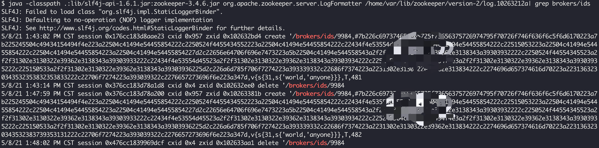
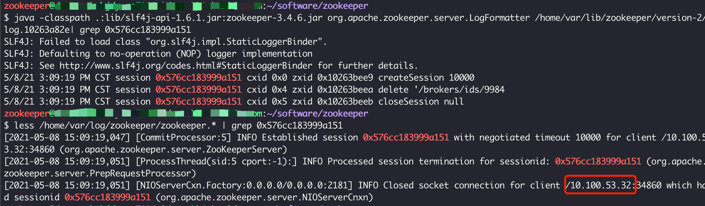

记一次kafka宕机问题排查
kafka集群出现宕机报警，自动替换新broker一直无法成功。
排查过程
kafka集群有一个broker宕机，自动替换机器一直无法成功，手动重启时发现该broker对应的zookeeper上的/brokers/ids目录一直被删除导致。
定位zk目录一直被删除的原因：参照Zookeeper日志文件&事务日志&数据快照查看zk事务日志
首先查看zk事务日志所在的目录:
1
2
3cd zookeeper/conf
grep dataLogDir *
zoo.cfg:dataLogDir=/home/var/lib/zookeeper/通过
java -classpath .:lib/slf4j-api-1.6.1.jar:zookeeper-3.4.6.jar org.apache.zookeeper.server.LogFormatter /home/var/lib/zookeeper/version-2/log.10263212a| grep brokers/ids查看事务日志，发现/brokers/ids/9984确实在刚刚创建时就被立刻删除了，并且可以找到zk的session id任一找到一个删除该zk节点的session id，查找zk日志，确定删除操作的客户端
- 排查过程中发现，好多session id在zk日志中找不到，后面经同学提示才发现原因是zk有5个节点，事务日志在所有节点时相同的，但是普通日志只包含连接本节点的session id，所以需要在所有zk节点的普通日志中进行查找。
- session closed时才会打印客户端ip
问题确定：原来是删除操作的broker与新启动的broker id相同，都为9884，但是由于执行删除操作的机器有问题，一直在重启，每次启动时前都会先删除/brokers/ids/9984这个zk节点
经验总结
- zk事务日志的查看方式：Zookeeper日志文件&事务日志&数据快照
- zk所有节点的事务日志是相同的，但是普通日志中只有与当前节点连接的session信息